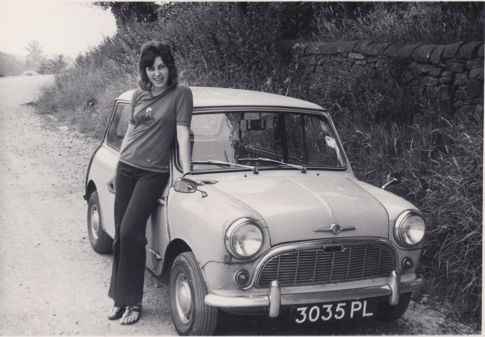
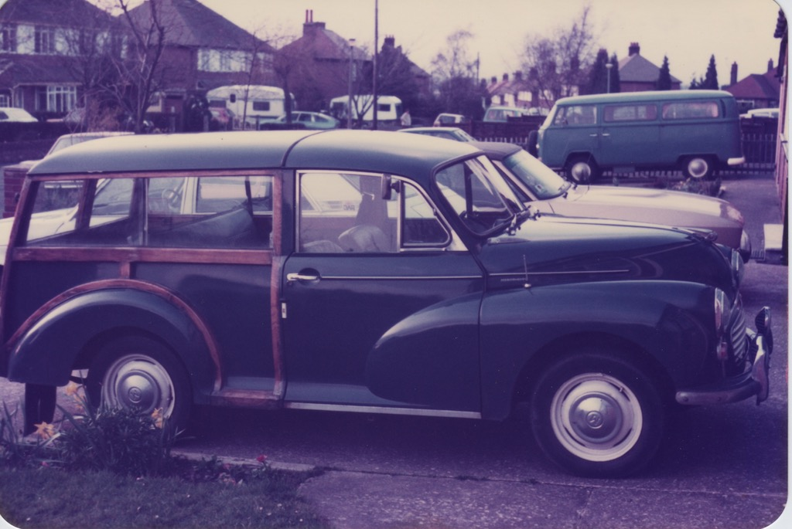
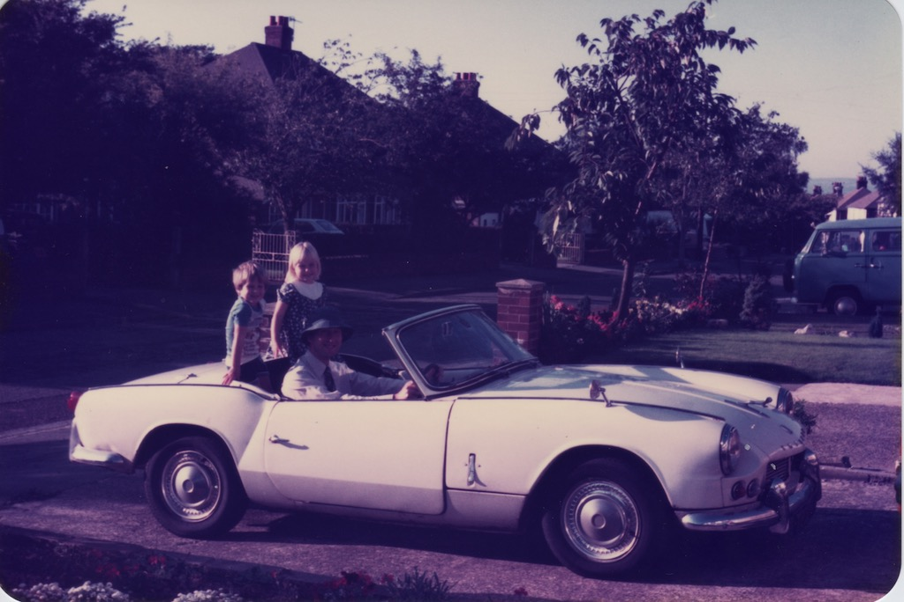
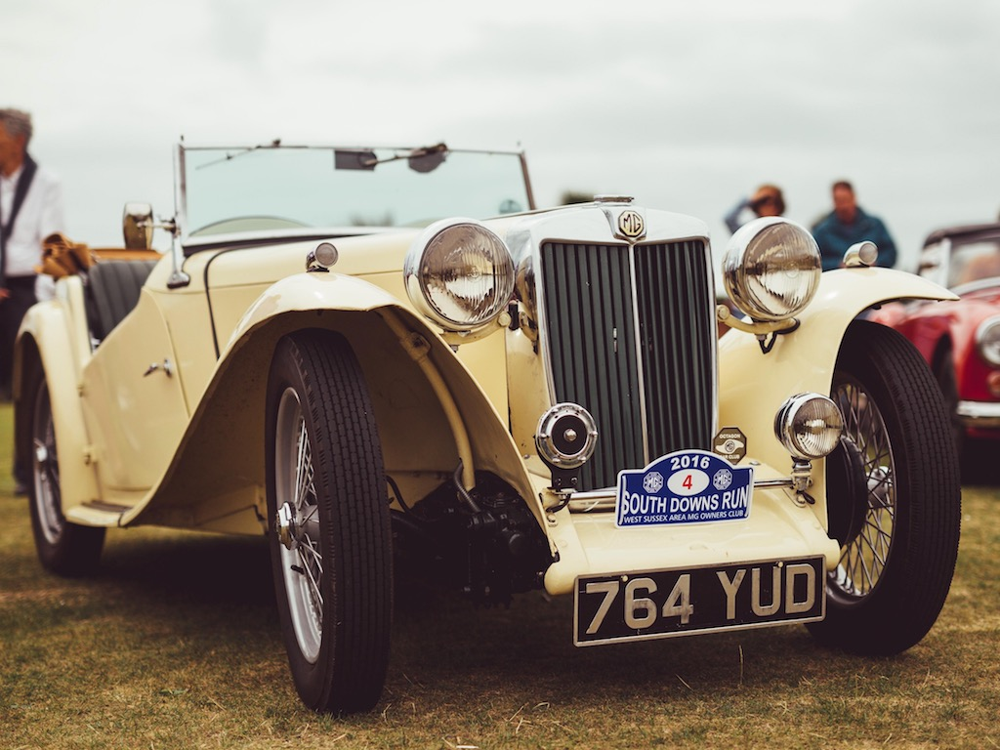

Some of Our Cars
 Of late it hasn't been a time to do work on the TC or to take it for much of a run, so I've been doing a few other things, including making some notes on things we have done in the past. That included trying to remember all the cars that we've owned. We think that we've owned or had use of (as in company car) 22 vehicles between us, and I'd like to share just a few of them with you now.
Of late it hasn't been a time to do work on the TC or to take it for much of a run, so I've been doing a few other things, including making some notes on things we have done in the past. That included trying to remember all the cars that we've owned. We think that we've owned or had use of (as in company car) 22 vehicles between us, and I'd like to share just a few of them with you now.
During the summer of 1967 I worked during my vacation from university so as to save enough money to buy my first car. At the end of the summer I was talked out of buying a TC (which wouldn't really have been very practical for my needs) and bought a 1960 Ford Prefect 107E. The photo is not my car, but mine was the same two-tone blue. You may recall this rounded shape as the Ford Popular 100E and the later Ford Anglia 105E with the raked rear window. The former had a side-valve engine and a three-speed gearbox, whereas the latter had an overhead valve engine and four forward gears. The 107E was a hybrid of the two, with the body of the 100E and the engine and gearbox of the 105E. My Prefect managed to take my flatmate and I up and down between Hertfordshire and Lancashire each term for the next two years, even if it did refuse to start on many cold winter mornings. It also managed quite a few trips to Derby, where I had my first job.
Apart from selling the car for less than it had cost me to repair it, the only real problem I had was on a trip home from Lancaster. Suddenly the engine made a lot of noise and the steering was locked! Luckily we were travelling around a gentle right-hand bend, with just an unmade verge, so continuing straight on took us off the carriageway. The bolts holding the exhaust to the manifold had come undone and fallen out, so the exhaust pipe fell and locked the steering box. Connecting the exhaust to the manifold with some pieces of wire coat hanger got me home.
 While I was working in Derby, Angela was living in Lichfield and bought a 1958 Standard Eight, known as Supercar. Once again this is not Angela's car, but it looks very much like it. So as to understand her car a little more, Angela went on a car maintenance course. On one occasion she surprised a garage mechanic when she questioned his diagnosis. However, I do remember losing a socket somewhere under the bonnet of that car. I still have the small socket set, with a gap in the row of sockets.
While I was working in Derby, Angela was living in Lichfield and bought a 1958 Standard Eight, known as Supercar. Once again this is not Angela's car, but it looks very much like it. So as to understand her car a little more, Angela went on a car maintenance course. On one occasion she surprised a garage mechanic when she questioned his diagnosis. However, I do remember losing a socket somewhere under the bonnet of that car. I still have the small socket set, with a gap in the row of sockets.
Unfortunately, by 1972, the year we married, Supercar was no more and I had sold my car, a Mk1 Ford Escort, to help towards a deposit on a house. I was surprised one day when, driving along, the gear lever came off in my hand! Whereas I could walk to work from the rented house I shared with friends in Derby, Angela needed a car to get out from Litchfield to a small village primary school where she was teaching.
So Angela bought a mini saloon from a friend of her Mother's. It was pale blue in colour and, like many Minis of the 60s, had rusty sills. We went off on honeymoon in that Mini and from Derby we made several trips to Kent, the lake district and Norfolk. It was often the case that, when going on holiday or visiting our parents, particularly at Christmas time, the area behind the front seats would be full of our luggage, right up to the top of the seats.
I did quite a lot of 'cosmetic' repairs to the car, including making aluminium covers for the sills, attached with self-tapping screws and plenty of under-seal!
We were quite enamoured with Minis for a while and had a Mini van and then a Mini Countryman. The van had been used by a delivery company and had a flat, wooden floor in the back. I put windows in the van so as to improve the visibility.
If we jump forward to 1981 we were living in Lymm in Cheshire and had two children. That was also the year that we acquired Doris, a 1969 Morris 1000 Traveller. She came with a spare engine and gearbox in the boot. Although I didn't touch the gearbox, I put the engine on the bench and renovated the head and valves. With the Morris 1000 you could remove the front chassis member, jack up the engine and push the car backwards. No engine hoist required.
I also discovered that the timber on the car was structural. One of the rear pillars was rotten, so I replaced it. It was somewhat disconcerting to see the roof just hanging in space until I fitted the new pillar. Our first house in Lymm had an attached garage. A previous owner had extended the central heating so that there was a radiator on one wall of the garage. It was said that he had a Morgan with a wooden tub and wanted to keep it dry, but it meant that I could turn on the radiator when working on the car in winter.
In 1982 we also obtained a 1963 Triumph Spitfire 4, not a Mk4, but what was later referred to as a Mk1. In fact I believe that it was built in the first year of production. The car had been owned by Angela's uncle. After he died we took it on and I drove it from Essex to Cheshire. I then used it for my daily commute. I carried a very absorbent newspaper that I would put over my right knee to catch the drips coming through the hood when it rained. When we moved from Cheshire down to Sussex we brought the Spitfire with us, inside a trailer hooked to the back of the removal van. It stayed in the garage, with me doing only a little work on it, until 2001, when I sold it to someone who said that he would restore it. I discovered that he did nothing to it before selling it a year or two later.
Now we need to take another leap in space and time. We moved to Steyning in 1990, I retired in 2013 and in 2015 achieved what I wanted 48 years earlier. I bought a TC!
In June 2015 I persuaded Angela to have a day out in Essex. We stopped for lunch at a National Trust renovated barn and then went on to look at the TC. Just like my Dad, all those years ago, I think Angela knew that once I'd seen the car I would want to buy it. She was right. The car had originally been exported to the US (before the time when a specific US export model was produced) and then repatriated in 2010. It was in quite a sorry state, for example, no floor or seats and covered in rust, so the first owner spent three years restoring it. There isn't a lot of room behind the steering wheel of a TC and over the three years he had put on some weight, to the extent that he then couldn't fit behind the wheel. So he sold it. The second owner, the man in Essex, then tried to make the car more original by replacing some of the components, stripping off under-seal and getting it resprayed. The main problem was that the first UK owner didn't drive the car and the second owner only took it for a few short runs (including our test drive). I had planned to drive it from Essex to West Sussex, but in the end hired a transporter and driver. So I was the first to drive TC4985 any distance in the UK, the two trips to Eastbourne and back for the South Downs Run being the furthest in a single day, and I found the consequences, such as the brakes locking on after about ten miles! Before the pandemic I drove the TC about a thousand miles each year, but had to do a lot more mechanical work to it than I had planned.
So these are half a dozen of our more 'adventurous' cars. I wonder how many more there will be?
© David James 2020 Last updated: 28th December 2020